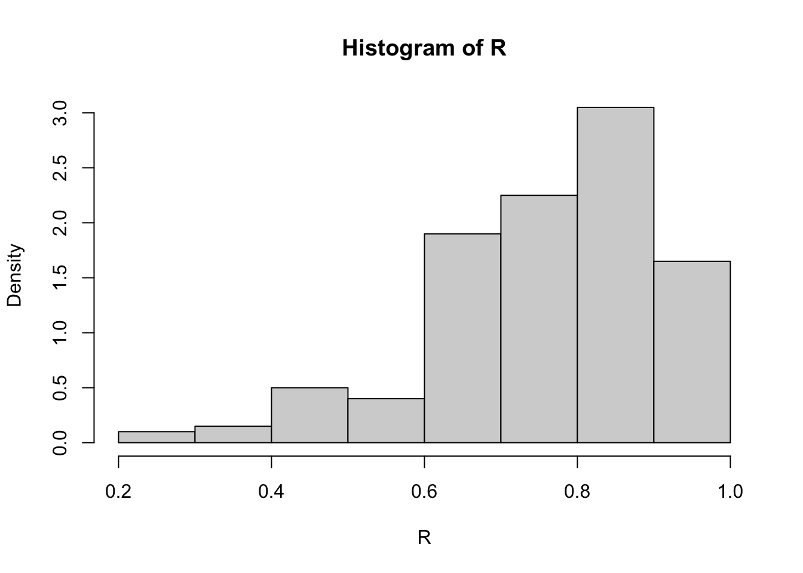

library(bootstrap) #for the law data
print(cor(law$LSAT, law$GPA)) # 15 sampled schools in hand[1] 0.7763745print(cor(law82$LSAT, law82$GPA)) # all total 82 schools[1] 0.7599979This chapter continues from the previous chapter, introducing more resampling methods; jackknife and bootstrap techniques.
Most of the contents of this chapter are mainly from the reference book, Chapter 8 of Rizzo, M.L. (2007). Statistical Computing with R. CRC Press, Roca Baton.
Resampling methods is a way to use the observed data to generate hypothetical samples. It treats an observed sample as a finite population, and random samples are generated/resampled from it to estimate population characteristics and make inferences about the sampled population. It is useful when:
Do not know the underlying distribution of a population
The formula may be difficult to be calculated.
Some commonly used resampling methods include:
Cross-validation: Cross-validation is a model validation technique for assessing how the results of a statistical analysis will generalize to an independent data set. It is mainly used in settings where the goal is prediction, and one wants to estimate how accurately a predictive model will perform in practice.
Bootstrap: Bootstrap methods are often used when the distribution of the target population is not specified; the sample is the only information available.
Jackknife: The jackknife is a resampling technique used to estimate the bias and variance of a statistic. It is like a leave-one-out (LOO) cross-validation.
Permutation tests: Permutation tests are a type of non-parametric statistical test that involves rearranging the data points to test a hypothesis. They are used to determine whether the observed effect is statistically significant by comparing it to the distribution of effects obtained through random permutations of the data.
In statistics, the bias-variance tradeoff is the property of a model that the variance of the parameter estimated across samples can be reduced by increasing the bias in the estimated parameters. If we look at the Mean square error (MSE) of an estimator \(\hat \theta\) for a parameter \(\theta\):
Suppose we have a parameter \(\theta\) and an estimator \(\hat \theta\). The mean square error (MSE) of the estimator is defined as \[\mathrm{MSE}_{\theta}(\hat \theta)=\mathbb E[(\hat \theta-\theta )^2 ]= \mathbb{V}ar(\hat \theta) + [\mathbb b(\hat \theta)]^2,\] where \(\mathbb b\) is the bias of the estimator.
We start with the definition of the mean squared error (MSE):
\[ \mathrm{MSE}_\theta(\hat \theta) = \mathbb E\big[(\hat \theta- \theta)^2\big]. \]
Add and subtract \(\mathbb E[\hat \theta]\) inside the square: \[ \mathbb E\big[(\hat \theta- \theta)^2\big] = \mathbb E\big[(\hat \theta- \mathbb E[\hat \theta] + \mathbb E[\hat \theta] - \theta)^2\big]. \]
Expand the square: \[ \mathbb E\big[(\hat \theta- \mathbb E[\hat \theta])^2\big] + 2\,\mathbb E\big[(\hat \theta- \mathbb E[\hat \theta])(\mathbb E[\hat \theta] - \theta)\big] + (\mathbb E[\hat \theta] - \theta)^2. \]
The middle term vanishes because \[ \mathbb E\big[\hat \theta- \mathbb E[\hat \theta]\big] = 0. \]
Hence, \[ \mathbb E\big[(\hat \theta- \theta)^2\big] = \mathbb E\big[(\hat \theta- \mathbb E[\hat \theta])^2\big] + (\mathbb E[\hat \theta] - \theta)^2. \]
Recognizing that \[ \mathbb{V}ar(\hat \theta) = \mathbb E\big[(\hat \theta- \mathbb E[\hat \theta])^2\big] \quad \text{and} \quad b(\hat \theta) = \mathbb E[\hat \theta] - \theta, \] we obtain the bias–variance decomposition: \[ \boxed{ \mathbb E\big[(\hat \theta- \theta)^2\big] = \mathbb{V}ar(\hat \theta) + \mathbb b^2(\hat \theta)^2.} \]
Questions: Why do we care about the bias? Can we always find an unbiased estimator? What does it mean?
For most of the course, we focus on the unbiased estimator. This may often be obtained from using the LLN. Then, such as in the MC Chapter, we can compare the (relative) efficiency between the estimators, and discuss about the variance reduction.
Bootstrap estimates of a sampling distribution are analogous to the idea of density estimation (will be introduced in a later chapter). We construct a histogram of a sample to obtain an estimate of the shape of the density function. The histogram is not the density, but in a nonparametric problem, can be viewed as a reasonable estimate of the density. We have methods to generate random samples from completely specified densities; bootstrap generates random samples from the empirical distribution of the sample.
Suppose we have an observed random sample \(x=(x_1,\dots,x_n)\) from a distribution \(F\). If \(X^\ast\) is selected at random from \(x\), then \[P(X^\ast=x_i)=1/n,\quad i=1,\dots,n.\]
Resampling generates a random sample \(X^\ast_1,\dots,X_n^\ast\) by sampling with replacement from the observed sample \(x\). Then the RVs \(X_i^\ast\) are i.i.d. and uniformly distributed on the observed data points \(\{x_1,\dots,x_n\}\).
The empirical distribution function (ecdf) \(F_n(x)\) is an estimator of \(F(x)\). It can be shown that \(F_n(x)\) is a sufficient statistic for \(F(x)\); that is, all the information about \(F(x)\) that is contained in the sample is also contained in \(F_n(x)\). Moreover, \(F_n(x)\) is itself the distribution function of a random variable; namely the random variable that is uniformly distributed on the set \(\{x_1, \dots , x_n\}\). Hence the empirical cdf \(F_n\) is the cdf of \(X^\ast\). Thus in bootstrap, there are two approximations. The ecdf \(F_n\) is an approximation to the cdf \(F_X\). The ecdf \(F_m^\ast\) of the bootstrap replicates is an approximation to the ecdf \(F_n\). Resampling from the sample \(x\) is equivalent to generating random samples from the distribution \(F_n(x)\). The two approximations can be represented by the diagram
\[ \begin{aligned} F & \rightarrow X \rightarrow F_n \\ F_n & \rightarrow X^* \rightarrow F_n^* . \end{aligned} \]
To generate a bootstrap random sample by resampling \(x\), generate \(n\) random integers \(\{i_1,\dots, i_n\}\) uniformly distributed on \(\{1,\dots , n\}\) and select the bootstrap sample \(x^\ast = (x_{i_1} ,\dots , x_{i_n} )\).
Let \(\theta\) be the parameter of interest (could be a vector), and \(\hat \theta\) be its estimator. Then the bootstrap estimate of the distribution of \(\hat \theta\) is obtained as follows.
Suppose that we have observed the sample
\[x = \{2, 2, 1, 1, 5, 4, 4, 3, 1, 2\}.\]
Resampling from \(x\) we select \(1, 2, 3, 4\), or \(5\) with probabilities \(0.3, 0.3, 0.1, 0.2\), and \(0.1\), respectively, so the cdf \(F_{X^\ast}\) of a randomly selected replicate is exactly the ecdf \(F_n(x)\):
\[ F_{X *}(x)=F_n(x)= \begin{cases}0, & x<1 ; \\ 0.3, & 1 \leq x<2 ; \\ 0.6, & 2 \leq x<3 ; \\ 0.7, & 3 \leq x<4 ; \\ 0.9, & 4 \leq x<5 ; \\ 1, & x \geq 5 .\end{cases} \]
Note that if \(F_n\) is not close to \(F_X\) then the distribution of the replicates will not be close to \(F_X\). The sample \(x\) above is actually a sample from a Poisson(2) distribution. Resampling from \(x\) a large number of replicates produces a good estimate of \(F_n\) but not a good estimate of \(F_X\) , because regardless of how many replicates are drawn, the bootstrap samples will never include \(0\).
Recall that, in normal approximate, the \(100(1-\alpha)\)% confidence interval (for \(\mu\)) is given as \[ \bar{x}_n \pm z_{1-\alpha/2} \frac{\sigma}{\sqrt{n}}. \] In the above formula, we refer
The standard error (SE) of a statistic is the standard deviation of its sampling distribution. The se is often used in calculations of confidence intervals.
To estimate the \(se\) of an estimator \(\hat \theta\), we can use the bootstrap method. Let \(\hat \theta^{(1)},\dots,\hat \theta^{(B)}\) be the bootstrap replicates. The bootstrap estimate of the standard error of \(\hat \theta\) is given by the sample standard deviation of the replicates:
\[ \widehat{s e}\left(\hat{\theta}^*\right)=\sqrt{\frac{1}{B-1} \sum_{b=1}^B\left(\hat{\theta}^{(b)}-\overline{\hat{\theta}^*}\right)^2}, \] where \(\overline{\hat{\theta}^*}=\frac{1}{B} \sum_{b=1}^B \hat{\theta}^{(b)}\).
The number of replicates needed for good estimates of standard error is not large; \(B = 50\) is usually large enough, and rarely is \(B > 200\) necessary.
The law school data set law in the bootstrap package. The data frame contains LSAT (average score on law school admission test score) and GPA (average undergraduate grade point average) for 15 law schools.
| Observation | LSAT | GPA |
|---|---|---|
| 1 | 576 | 339 |
| 2 | 635 | 330 |
| 3 | 558 | 281 |
| 4 | 578 | 303 |
| 5 | 666 | 344 |
| 6 | 580 | 307 |
| 7 | 555 | 300 |
| 8 | 661 | 343 |
| 9 | 651 | 336 |
| 10 | 605 | 313 |
| 11 | 653 | 312 |
| 12 | 575 | 274 |
| 13 | 545 | 276 |
| 14 | 572 | 288 |
| 15 | 594 | 296 |
This data set is a random sample from the universe of 82 law schools in law82 (bootstrap). Estimate the correlation between LSAT and GPA scores, and compute the bootstrap estimate of the standard error of the sample correlation.
The bootstrap procedure is
[1] 0.7763745[1] 0.7599979#set up the bootstrap
B <- 200 #number of replicates
n <- nrow(law) #sample size
R <- numeric(B) #storage for replicates
#bootstrap estimate of standard error of R
for (b in 1:B) {
# randomly select the indices
i <- sample(1:n, size = n, replace = TRUE)
LSAT <- law$LSAT[i] # i is a vector of indices
GPA <- law$GPA[i]
R[b] <- cor(LSAT, GPA)
}
#output
(se.R <- sd(R))[1] 0.128997
The bootstrap estimate of se(R) is 0.129. The normal theory estimate for standard error of R is 0.115.
We can also use the boot(.) function in the boot package to compute the bootstrap estimate of standard error.
First, write a function that returns \(\hat \theta(b)\), where the first argument to the function is the sample data, and the second argument is the vector \(\{i_1, \dots , i_n\}\) of indices. If the data is \(x\) and the vector of indices is i, we need \(x[i,1]\) to extract the first resampled variable, and x[i,2] to extract the second resampled variable. The code and output is shown below.
The printed summary of output from the boot function is obtained by the command boot or the result can be saved in an object for further analysis. Here we save the result in obj and print the summary.
ORDINARY NONPARAMETRIC BOOTSTRAP
Call:
boot(data = bootstrap::law, statistic = my_r, R = 2000)
Bootstrap Statistics :
original bias std. error
t1* 0.7763745 -0.01075929 0.1364617The observed value \(\hat \theta\) of the correlation statistic is labeled t1*. The bootstrap estimate of standard error of the estimate is \(se(\hat \theta) =\) 0.1365, based on 2000 replicates. Note that the standard deviation of the replicates can be computed directly.
Recall that a bias of an estimator \(\hat \theta\) is defined as \[ \mathbb b(\hat \theta) = \mathbb E[\hat \theta] - \theta. \]
An example of a biased estimator is the MLE of variance, \(\hat{\sigma}^2 = \sum (X_i-\bar{X}_n)^2/n\) of \(\sigma^2 = \sum (X_i-\bar{X}_n)^2/(n-1)\), which has expected value \((1 − 1/n)\sigma^2\). Here, the bias is \(−\sigma^2/n\).
The bootstrap estimation of bias uses the bootstrap replicates of \(\hat \theta\) to estimate the sampling distribution of \(\hat \theta\). For the finite population \(x = (x_1,\dots , x_n)\), the parameter is \(\hat \theta(x)\) and there are \(B\) i.i.d. estimators \(\hat \theta^{(b)}\). The sample mean of the replicates \(\{\hat \theta(b)\}\) is unbiased for its expected value \(\mathbb E[\hat \theta^\ast]\), so the bootstrap estimate of bias is
\[\mathbb b(\hat \theta) = \hat \theta^\ast − \hat \theta,\] where \(\hat \theta^\ast = \sum_{b=1}^B \hat \theta^{(b)}\), and \(\hat \theta= \hat \theta(x)\) is the estimate computed from the original observed sample. (In bootstrap \(F_n\) is sampled in place of \(F_X\) , so we replace \(\theta\) with \(\hat \theta\) to estimate the bias.)
\(\oplus\) Positive bias indicates that \(\hat \theta\) on average tends to overestimate \(\theta\),
\(\ominus\) Negative bias is on average underestimate \(\theta\)
In the law data example, compute the bootstrap estimate of bias in the sample correlation.
# sample estimate for n=15
theta.hat <- cor(law$LSAT, law$GPA)
# bootstrap estimate of bias
B <- 2000 # larger for estimating bias
n <- nrow(law)
theta.b <- numeric(B)
for (b in 1:B) {
i <- sample(1:n, size = n, replace = TRUE)
LSAT <- law$LSAT[i]
GPA <- law$GPA[i]
theta.b[b] <- cor(LSAT, GPA)
}
(bias <- mean(theta.b - theta.hat))[1] -0.001063244The estimate of bias is -0.0011. Note that this is close to the estimate of bias returned by the boot function we used before.
The patch data from the bootstrap package contains measurements of a certain hormone in the bloodstream of 8 subjects after wearing a medical patch. The parameter of interest is
\[ \theta\coloneqq\frac{\mathbb E(\text { new })-\mathbb E(\text { old })}{\mathbb E(\text { old })-\mathbb E(\text { placebo })} \]
If \(|\theta| \ge 0.20\), this indicates bioequivalence of the old and new patches. The statistic is \(\bar{Y} /\bar{Z}\). Compute a bootstrap estimate of bias in the bioequivalence ratio statistic.
subject placebo oldpatch newpatch z y
1 1 9243 17649 16449 8406 -1200
2 2 9671 12013 14614 2342 2601
3 3 11792 19979 17274 8187 -2705
4 4 13357 21816 23798 8459 1982
5 5 9055 13850 12560 4795 -1290
6 6 6290 9806 10157 3516 351n <- nrow(patch) #in bootstrap package
B <- 2000
theta.b <- numeric(B)
theta.hat <- mean(patch$y) / mean(patch$z)
for (b in 1:B) {
i <- sample(1:n, size = n, replace = TRUE)
y <- patch$y[i]
z <- patch$z[i]
theta.b[b] <- mean(y) / mean(z)
}
bias <- mean(theta.b) - theta.hat
se <- sd(theta.b)
result <- data.frame(
Estimate = theta.hat,
Bias = bias,
SE = se,
CV = bias / se
)
knitr::kable(result, digits = 3, caption = "Bootstrap results for correlation estimate")| Estimate | Bias | SE | CV |
|---|---|---|---|
| -0.071 | 0.006 | 0.101 | 0.061 |
If \(|\mathbb b|/se \le 0.25\), it is not usually necessary to adjust for bias. The \(\mathbb b\) is small relative to standard error ( \(\mathbb b/se < 0.08\)), so in this example it is not necessary to adjust for bias.
The jackknife is another resampling technique used to estimate the bias and variance of a statistic.
Jackknife is similar to leave-one-out cross-validation (LOOCV). Let \(\mathbf{x}= (x_1,\dots,x_n)\) be an observed random sample, and denote the \(i\)th jackknife sample by \(\mathbf{x}_{-i} = (x_1,\dots,x_{i-1},x_{i+1},\dots,x_n)\), that is, a subset of \(\mathbf{x}\).
Jackknife can be used to:
For the parameter of interest \(\theta\), if the statistics is \(T(\mathbf{x})=: \hat \theta\) is computed on the full
Jackknife is a special kind of Cross-validation where we leave-one-out (LOO) the observation, and calculate the quantities on the remaining data. To fix the idea, let \(x=(x_1,\dots,x_n)\) be the observed data of samele size \(n\). The \(i\)th jackknife sample is defined as \(x_{(i)}=(x_1,\dots,x_{i-1},x_{i+1},\dots,x_n)\), that is, the sample with the \(i\)th observation removed. Let \(\hat \theta=T_n(x)\) be the estimator of the parameter of interest \(\theta\). The \(i\)th jackknife replicate is defined as \(\hat \theta_{(i)}=T(x_{(i)})\), that is, the estimate computed from the \(i\)th jackknife sample. The jackknife estimate of bias is defined as
If \(\hat \theta\) is a smooth statistic, then \(\hat \theta_{(\cdot)} = t(F_{n−1}(x_{(i)}))\), and the jackknife estimate of bias is \[ \hat{\mathbb b}_{jack} = (n − 1)(\overline{\hat \theta_{(\cdot)}} − \hat \theta), \] where \(\overline{\hat \theta_{(\cdot)}}=\frac{1}{n} \sum_{i=1}^n \hat \theta_{(i)}\) is the average of the estimate from LOO samples, and \(\hat \theta=\hat \theta(x)\) is the estimate from the original observed sample.
For instance, in the case of \(\theta\) is the population variance \(\theta=\sigma^2\). Let \(x_1,\dots,x_n\) be random samples from \(F_X\), the variance is \[ \mathbb E[(X - \mu)^2] =: \theta, \] and the plug-in estimator is \[ \hat \theta= \frac{1}{n} \sum_{i=1}^n (x_i - \bar x_n)^2. \] This estimator \(\hat \theta\) is biased, and the bias is \[ \mathbb b(\hat \theta)=\mathbb E\left[\hat \theta-\theta\right]=\frac{n-1}{n} \sigma^2-\sigma^2=-\frac{\sigma^2}{n}. \] Since Jackknife is a resampling method, we compute the jackknife replicates \(\hat \theta_{(i)}\) by leaving one observation out for each of the \(i\) on sample size \(n-1\), so the bias in the jackknife replicates is \(-\sigma^2/(n-1)\). Thus, for each \(i,~i=1,\dots,n\), we have \[ \begin{aligned} \mathbb E\left[\hat \theta_{(i)}-\hat \theta\right] & =\mathbb E\left[\hat \theta_{(i)}-\theta\right]-\mathbb E[\hat \theta-\theta] \\ & =\mathbb b\left(\hat \theta_{(i)}\right)-\mathbb b(\hat \theta) \\ & =-\frac{\sigma^2}{n-1}-\left(-\frac{\sigma^2}{n}\right) =-\frac{\sigma^2}{n(n-1)}=\frac{\mathbb b(\hat \theta)}{n-1} . \end{aligned} \] Therefore, the \(n-1\) factor appears in the jackknife estimate of bias formula results the unbiased estimate of the bias.
Compute the jackknife estimate of bias for the patch data in the bootstrap package.
[1] -0.0713061[1] 0.008002488The jackknife estimate of standard error (se) is given by \[ \boxed{\widehat{s e}_{j a c k}=\sqrt{\frac{n-1}{n} \sum_{i=1}^n\left(\hat{\theta}_{(i)}-\overline{\hat{\theta}_{(\cdot)}}\right)^2}}, \] for smooth statistics \(\hat \theta\).
We can first see an example in the context of the population mean. Suppose our parameter of interest is \(\theta=\mu\) and \(\hat \theta=\bar{x}_n\) is its estimator. Then the variance estimator of the \(\hat \theta\) is \(\sqrt{\mathbb{V}ar(X)/n}\). Hence, the factor \((n-1)/n\) makes \(\widehat{s e}_{j a c k}\) an unbiased eestimator of the se of the mean.
The other way to look at this is that, we can consider a plug-in estimate of the se of the mean. For a continuous rv \(X~F_X\), suppose we have the random samples from \(F_X\) and obtain \(\mathbf{x}=(x_1,\dots,x_n)\). The plug-in estimate of the variance of a them is the variance of \(Y\) , where \(Y\) is uniformly distributed on the sample \(x_1,\dots,x_n\). That is,
\[ \begin{aligned} \widehat{\mathbb{V}ar}(Y) & =\frac{1}{n} \mathbb E[Y-\mathbb E[Y]]^2=\frac{1}{n} \mathbb E[Y-\bar{X}]^2 \\ & =\frac{1}{n} \sum_{i=1}^n\left(X_i-\bar{X}\right)^2 \cdot \frac{1}{n} \\ & =\frac{n-1}{n^2} S_X^2=\frac{n-1}{n}[\widehat{\operatorname{se}}(\bar{X})]^2 . \end{aligned} \]
Thus, for the jackknife estimator of standard error, a factor of \(\{(n − 1)/n\}/2\) gives the plug-in estimate of variance. The factors \(\{(n−1)/n\}/2\) and \((n−1)/n\) are approximately equal if \(n\) is large. Researchers commented that the choice of the factor \((n − 1)/n\) instead of \(\{(n − 1)/n\}/2\) is somewhat arbitrary.
The jackknife estimate of standard error is 0.1055 From the previous result for the bias, we have the estimated coefficient of variation
| bias | se | cv |
|---|---|---|
| 0.008 | 0.106 | 0.076 |
Q: When does jackknife not work?
Jackknife does not work when the function \(T(\cdot)\) is not a smooth functional! Smoothness means that small changes in the data correspond to small changes in the statistic. For instance, median is a statisitics that is NOT smooth.
Example 8.8 (Failure of jackknife). In this example the jackknife estimate of standard error of the median is computed for a random sample of 10 integers from \(1,\dots, 100\).
set.seed(777)
n <- 10
x <- sample(1:100, size = n)
# jackknife estimate of se
M <- numeric(n)
for (i in 1:n) { # leave one out
y <- x[-i]
M[i] <- median(y)
}
Mbar <- mean(M)
# bootstrap estimate of se
Mb <- replicate(1000, expr = {
y <- sample(x, size = n, replace = TRUE)
median(y)
})
est_jk <- sqrt((n - 1) / n * sum((M - Mbar)^2)) # jackknife estimate
est_bs <- sd(Mb) # bootstrap estimate
tbl <- data.frame(
Method = c("Jackknife", "Bootstrap"),
Estimate = c(est_jk, est_bs)
)
# Display table
kable(tbl, digits = 4, caption = "Comparison of Jackknife and Bootstrap Estimates") %>%
kable_styling(full_width = FALSE, position = "center")| Method | Estimate |
|---|---|
| Jackknife | 52.5000 |
| Bootstrap | 19.2889 |
Something fishy here?
Clearly something is wrong here, because the bootstrap estimate and the jackknife estimate are far apart. The jackknife fails because the median is not smooth.
In this case, when the statistic is not smooth, the delete-d jackknife can be applied. If \(\sqrt{n}/{d}\to 0\) and \(n − d\to\infty\), then the delete-d jackknife is consistent for the median. The computing time increases because there are a large number of jackknife replicates when \(n\) and \(d\) are large.
In this section, we introduce a several approaches to obtaining approximate confidence intervals (CIs) for the target parameter in a bootstrap. The methods include
he standard normal bootstrap confidence interval is the simplest approach, but not necessarily the best. Suppose that \(\hat \theta\) is an estimator of parameter θ, and assume the standard error of the estimator is \(se(\hat \theta)\). If \(\hat \theta\) is a sample mean and the sample size is large, then the CLT implies that \[ \frac{\hat{\theta}-\mathbb E[\hat \theta]}{s e(\hat{\theta})} \approx N(0,1)=Z. \] Hence, if \(\hat \theta\) is unbiased of \(\theta\), then an approximate \(100(1-\alpha)\)% CI for \(\theta\) is given by \[ \hat \theta\pm z_{1-\alpha / 2} s e(\hat \theta), \] Advantage:
Disadvantage: requires several assumptions.
Bias can be estimated and used to center the Z statistic, but the estimator is a rv, so the transformed variable is not normal. Here we have treated \(se(\hat \theta)\) as a known parameter, but in the bootstrap \(se(\hat \theta)\) is estimated (the sample standard deviation of the replicates).
The basic bootstrap CI interval transforms the distribution of the replicates by subtracting the observed statistic. The quantiles of the transformed sample \(\hat \theta^\ast-\hat \theta\) are used to determine the confidence limits.
The \(100(1 − \alpha)\)% confidence limits for the basic bootstrap confidence interval are \[ \boxed{ (2\hat \theta- \hat \theta^ \ast_{1-\alpha/2},\quad 2\hat \theta- \hat \theta^ \ast_{\alpha/2})}, \] whee re \(\hat \theta^\ast_q\) is the \(q\)th quantile of the bootstrap replicates \(\hat \theta^{(1)},\dots ,\hat \theta^{(B)}\).
Let \(\mathbf{x}= (x_1,\dots,x_n)\) be the observed sample, and a statistics \(\hat \theta= T_n(\mathbf{x})\) be the estimator of the parameter of interest \(\theta\) of the sampling distribution. Assume that we have \(B\) replicates \(\hat \theta^\ast\) from bootstrap.
To obtain a symmetric \(100(1-\alpha)\)% CI for \(\theta\), say \((L,U)\), we know that we need \[ P(U \le \theta)= P(\theta \le L)=\alpha/2. \] Then, we have \[ \alpha/2 = P(L \ge \theta) = P(L-\hat \theta\ge \theta - \hat \theta) = P(\hat \theta- \theta \le \hat \theta- L). \]
Now, we have to solve it, we need \(L-\hat \theta\) be the \(1-\alpha/2\)’s quantile of the distribution of \(\hat \theta- \theta\). However, the distribution of \(\hat \theta- \theta\) is unknown. In bootstrap, we approximate the distribution of \(\hat \theta- \theta\) by the distribution of \(\hat \theta^\ast - \hat \theta\). Thus, we set \(\hat \theta- L\) to be the \(1-\alpha/2\)’s quantile of the distribution of \(\hat \theta^\ast - \hat \theta\), denoted as \(\hat \theta^\ast_{1-\alpha/2}\), that is, \(\hat \theta^\ast_{1-\alpha/2}-\hat \theta\). Then, we set \(\hat \theta-L\) to be \(\hat \theta^\ast_{1-\alpha/2}-\hat \theta\).
Similarly, for the upper limit \(U\), we have \[ \alpha/2 = P(\theta \ge U) = P(\theta - \hat \theta\ge U - \hat \theta) = P(\hat \theta- \theta \le \hat \theta- U), \] which leads to \(\hat \theta-U = \hat \theta_{\alpha/2}^\ast - \hat \theta\). We *move \(\hat \theta\) to other side for both \(L\) and \(U\). As a result, we obtain \[ (L,~U) = (2\hat \theta- \hat \theta^\ast_{1-\alpha/2},~2\hat \theta- \hat \theta^\ast_{\alpha/2}), \] which is the result of a basic bootstrap CI we state previously.
This method use directly from the empirical distribution.
A bootstrap percentile interval uses the empirical distribution of the bootstrap replicates as the reference distribution. The quantiles of the empirical distribution are estimators of the quantiles of the sampling distribution of \(\hat \theta\), so that these (random) quantiles may match the true distribution better when the distribution of \(\hat \theta\) is not normal. Suppose that \(\{\hat \theta^{(b)}\}_{b=1}^B\) are the bootstrap replicates of the statistic \(\hat \theta\). From the ecdf of the replicates, compute the \(\alpha/2\) quantile \(\hat \theta_{\alpha/2}\), and the \(1 − \alpha/2\) quantile \(\hat \theta_{1-\alpha/2}\).
Researchers showed that this method some theoretical advantages over the standard normal interval and somewhat better coverage performance in practice.
The boot::boot.ci(.) computes 5 types of bootstrap CI:
library(boot)
set.seed(8670)
data(patch, package = "bootstrap")
# function to compute the statistic
theta.boot <- function(dat, ind) {
y <- dat[ind, 1]
z <- dat[ind, 2]
mean(y) / mean(z)
}
y <- patch$y
z <- patch$z
dat <- cbind(y, z)
boot.obj <- boot(dat, statistic = theta.boot, R = 2000)
print(boot.obj)
ORDINARY NONPARAMETRIC BOOTSTRAP
Call:
boot(data = dat, statistic = theta.boot, R = 2000)
Bootstrap Statistics :
original bias std. error
t1* -0.0713061 0.01265825 0.1047968BOOTSTRAP CONFIDENCE INTERVAL CALCULATIONS
Based on 2000 bootstrap replicates
CALL :
boot.ci(boot.out = boot.obj, type = c("basic", "norm", "perc"))
Intervals :
Level Normal Basic Percentile
95% (-0.2894, 0.1214 ) (-0.3422, 0.0839 ) (-0.2265, 0.1995 )
Calculations and Intervals on Original ScaleRecall that the old and new patches are bioequivalent if |θ| ≤ 0.20. Hence, the interval estimates do not support bioequivalence of the old and new patches. Next we compute the bootstrap confidence intervals according to their defini- tions. Compare the following results with the boot.ci output.
library(knitr)
alpha <- 0.05
# normal
CI_normal <- boot.obj$t0 + qnorm(c(alpha/2, 1 - alpha/2)) * sd(boot.obj$t)
# basic
CI_basic <- 2 * boot.obj$t0 - quantile(boot.obj$t, probs = c(1 - alpha/2, alpha/2), type = 1)
# percentile
CI_percentile <- quantile(boot.obj$t, probs = c(alpha/2, 1 - alpha/2), type = 6)
# combine into data frame
CI_table <- data.frame(
Method = c("Normal", "Basic", "Percentile"),
Lower = c(CI_normal[1], CI_basic[1], CI_percentile[1]),
Upper = c(CI_normal[2], CI_basic[2], CI_percentile[2])
)
# display as kable
kable(CI_table, digits = 4, caption = "Bootstrap Confidence Intervals")| Method | Lower | Upper | |
|---|---|---|---|
| Normal | -0.2713 | 0.1287 | |
| 97.5% | Basic | -0.3077 | 0.0876 |
| 2.5% | Percentile | -0.2302 | 0.1674 |
The normal interval computed by boot.ci corrects for bias. Notice that the boot.ci normal interval differs from our result by the bias estimate shown in the output from boot. This is confirmed by read- ing the source code for the function. To view the source code for this calculation, when the boot package is loaded, enter the command getAnywhere(norm.ci) at the console. Also see norm.inter and [68] for details of calculations of quantiles.
Example 8.10 (Bootstrap confidence intervals for the correlation statis- tic). Compute 95% bootstrap confidence interval estimates for the correlation statistic in the law data of Example 8.2.
BOOTSTRAP CONFIDENCE INTERVAL CALCULATIONS
Based on 2000 bootstrap replicates
CALL :
boot.ci(boot.out = boot.obj, type = c("basic", "norm", "perc"))
Intervals :
Level Normal Basic Percentile
95% ( 0.5151, 1.0364 ) ( 0.5901, 1.0946 ) ( 0.4582, 0.9627 )
Calculations and Intervals on Original ScaleAll three intervals cover the correlation \(\rho=0.76\) of the universe of all law schools in law82. One reason for the difference in the percentile and normal confidence intervals could be that the sampling distribution of correlation statistic is not close to normal (see the histogram in Figure 8.1). When the sampling distribution of the statistic is approximately normal, the percentile interval will agree with the normal interval.
Even if the distribution of \(\hat \theta\) is normal and \(\mathbb E[\hat \theta]=\theta\), the normal distribution is not exactly correct for the Z statistic, because we estimate \(se(\hat \theta)\). Nor can we claim that it is a Student t statistic, because the distribution of the bootstrap estimator \(se(\hat \theta)\) is unknown. The bootstrap t interval does not use a Student t distribution as the reference distribution. Instead, the sampling distribution of a t type statistic (a studentized statistic) is generated by resampling. Let \(\mathbf{x}= (x_1, \dots, x_n)\) be an observed sample. The \(100(1 − \alpha)\)% bootstrap t confidence interval is \[ \boxed{ \left(\hat{\theta}-t_{1-\alpha / 2}^* \widehat{s e}(\hat{\theta}), \quad \hat{\theta}-t_{\alpha / 2}^* \widehat{s e}(\hat{\theta})\right)}, \]
where \(se(\hat \theta),~ t^\ast_{\alpha/2}\) and \(t^\ast_{1-\alpha/2}\) are computed as outlined below.
One disadvantage is the computational time!
To the bootstrap \(t\) interval, typically \(\widehat{se}(\hat \theta^{(b)})\) must be obtained by bootstrap. This is a bootstrap nested inside a bootstrap. If \(B = 1000\), for example, the bootstrap t confidence interval method takes approximately \(1000\) times longer than any of the other methods.
Here, we see how to compute the bootstrap \(t\) confidence interval for a univariate or a multivariate sample \(\mathbf{x}\). The required arguments to the function are
The default values are:
boot.t.ci <-
function(x, B = 500, R = 100, level = .95, statistic) {
# compute the bootstrap t CI
x <- as.matrix(x)
n <- nrow(x)
stat <- numeric(B)
se <- numeric(B)
boot.se <- function(x, R, f) {
# local function to compute the bootstrap
# estimate of standard error for statistic f(x)
x <- as.matrix(x)
m <- nrow(x)
th <- replicate(R, expr = {
i <- sample(1:m, size = m, replace = TRUE)
f(x[i, ])
})
return(sd(th))
}
for (b in 1:B) {
j <- sample(1:n, size = n, replace = TRUE)
y <- x[j, ]
stat[b] <- statistic(y)
se[b] <- boot.se(y, R = R, f = statistic)
}
stat0 <- statistic(x)
t.stats <- (stat - stat0) / se
se0 <- sd(stat)
alpha <- 1 - level
Qt <- quantile(t.stats, c(alpha / 2, 1 - alpha / 2), type = 1)
names(Qt) <- rev(names(Qt))
CI <- rev(stat0 - Qt * se0)
}We then aim to apply this function to our problem in hand.
Now, we want to compute a 95% bootstrap \(t\) confidence interval for the ratio statistic we discussed previously.
2.5% 97.5%
-0.2733909 0.4381807 The upper confidence limit of the bootstrap \(t\) confidence interval is much larger than the three intervals in Example 9 and the bootstrap \(t\) is the widest interval here.
There are other method to construct bootstrap CIs. Interested reader should read the reference book, Davison & Hinkley (1997).
Normal Approximation for Correlation SE
For a bivariate normal population, the sampling distribution of the sample correlation \(r\) is approximately normal with variance
\[ \operatorname{Var}(r) \approx \frac{(1 - \rho^2)^2}{n - 1}. \]
Thus, the standard error (SE) under the normal approximation is
\[ \operatorname{se}_{\text{normal}}(r) = \sqrt{\frac{(1 - r^2)^2}{n - 1}}. \]
In the Law school example
Given: - \(r = 0.7763745\) - \(n = 15\)
We can compute:
\[ 1 - r^2 = 1 - (0.776)^2 = 1 - 0.602 = 0.398, \] \[ \operatorname{Var}(r) \approx \frac{(0.398)^2}{14} = \frac{0.158}{14} = 0.0113, \] \[ \operatorname{se}(r) = \sqrt{0.0113} = 0.106. \]
This gives a rough normal-theory estimate of 0.106.
A more accurate approximation uses the Fisher z-transform:
\[ z = \frac{1}{2}\log\!\left(\frac{1 + r}{1 - r}\right), \]
which is approximately normal with
\[ \operatorname{Var}(z) = \frac{1}{n - 3}. \]
Applying the delta method:
\[ \operatorname{se}(r) \approx (1 - r^2)\sqrt{\frac{1}{n - 3}}. \]
Plug in the values:
\[ \operatorname{se}(r) = (1 - 0.776^2)\sqrt{\frac{1}{12}} = 0.398 \times 0.289 = 0.115. \]
✅ Normal approximation (Fisher z) SE = 0.115
Alternatively, we may use the Bootstrap Estimate to compare with:
library(bootstrap) # for the law data
set.seed(123)
# Sample data
law <- data.frame(
LSAT = c(576, 635, 558, 578, 666, 580, 555, 661, 651, 605, 653, 575, 545, 572, 594),
GPA = c(339, 330, 281, 303, 344, 307, 300, 343, 336, 313, 312, 274, 276, 288, 296)
)
# Sample correlation
r <- cor(law$LSAT, law$GPA)
n <- nrow(law)
# Bootstrap estimate of SE
B <- 200
R <- replicate(B, {
i <- sample(1:n, size = n, replace = TRUE)
cor(law$LSAT[i], law$GPA[i])
})
se_boot <- sd(R)
# Normal approximation
se_normal <- sqrt((1 - r^2)^2 / (n - 1))
# Fisher z-approximation
se_fisher <- (1 - r^2) / sqrt(n - 3)
# Display results
data.frame(
Method = c("Bootstrap", "Normal theory", "Fisher z-approximation"),
SE = c(se_boot, se_normal, se_fisher)
) Method SE
1 Bootstrap 0.1200175
2 Normal theory 0.1061676
3 Fisher z-approximation 0.1146741Davison, A.C. and Hinkley, D.V. (1997). Bootstrap Methods and their Application. Cambridge University Press.
Section 7.11 in Hastie, T., Tibshirani R. and Friedman, J. (2008). The Elements of Statistical Learning. Springer, 2nd edition.
Chapter 8 of Rizzo, M.L. (2007). Statistical Computing with R. CRC Press, Roca Baton.
Wu, C.F.J. (1986).Bootstrap and Other Resampling Methods in Regression Analysis. The Annals of Statistics.
Some useful R functions for resampling methods:
sample(): Generate random samples from a specified set of data points.
boot::boot(): Perform bootstrap resampling and compute statistics.
bootstrap: A package that is associated with the book by Efron and Tibshirani (1993). It contains variety of the functions for bootstrap and jackknife, and the dataset used in the book.